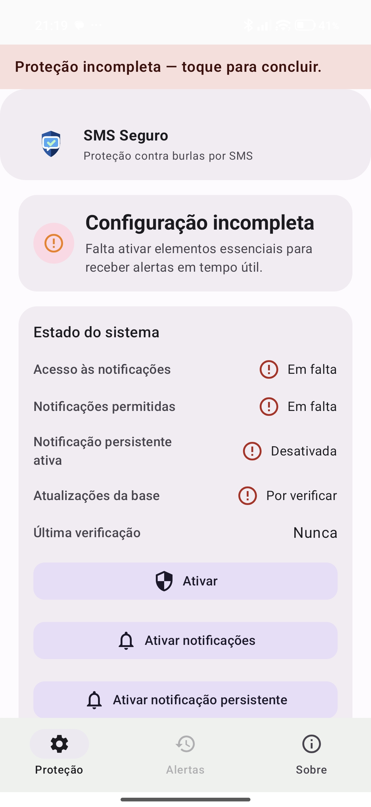
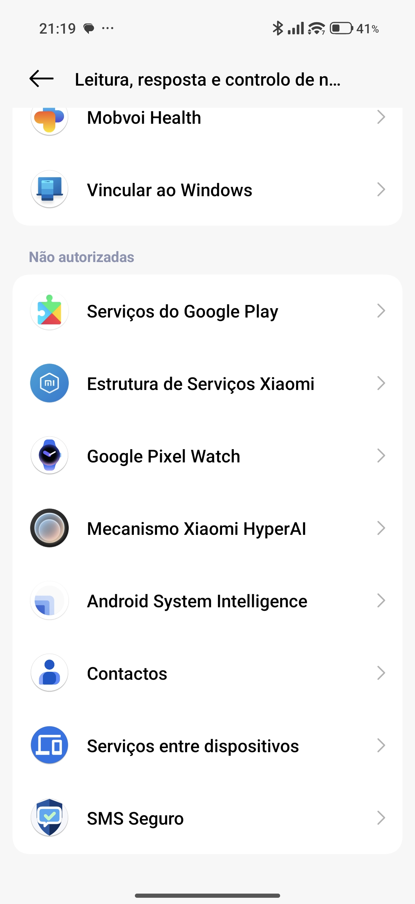
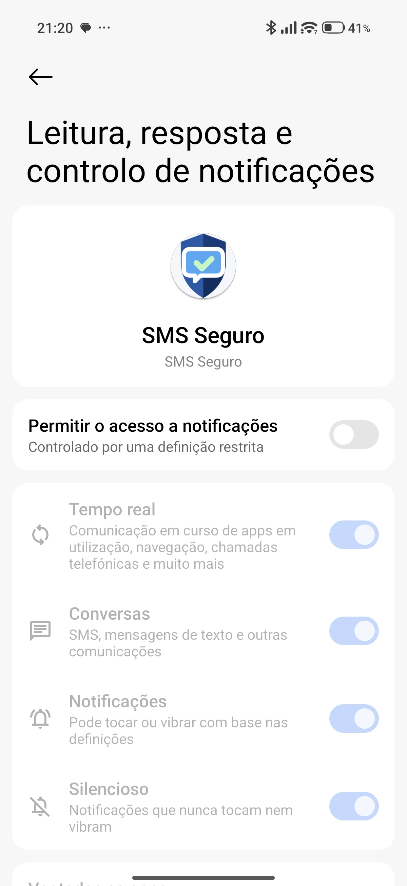
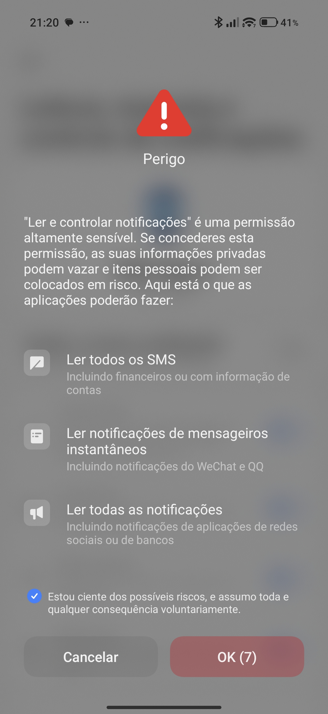
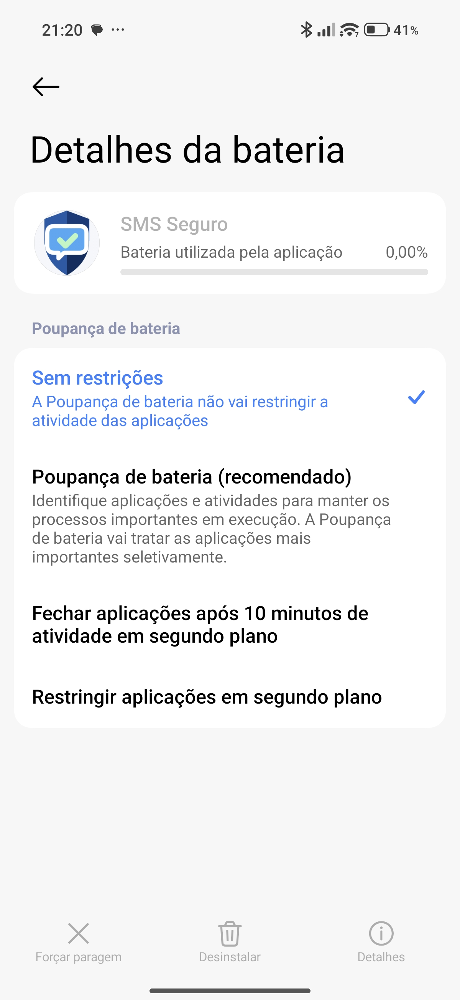
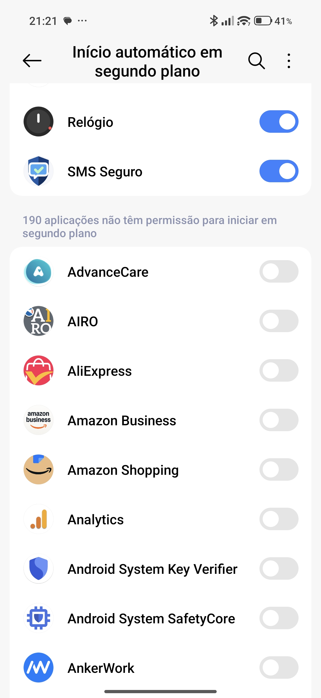
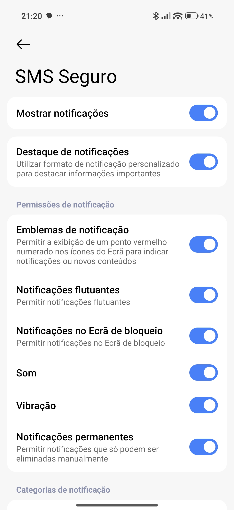
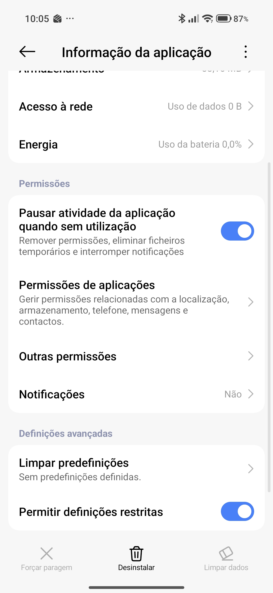

1
Abra a app e toque em Ativar
Se a proteção estiver incompleta, toque no botão principal Ativar. Depois, no ecrã grande da app, toque em ATIVAR PROTEÇÃO AGORA.

Guia simples, com imagens, para ativar o SMS Seguro num Xiaomi. O aviso “Perigo” pode aparecer. É normal neste passo.
Se a proteção estiver incompleta, toque no botão principal Ativar. Depois, no ecrã grande da app, toque em ATIVAR PROTEÇÃO AGORA.

Vai abrir a lista de apps com acesso a notificações. Procure SMS Seguro.

Toque em SMS Seguro e depois ligue o interruptor principal. Se aparecer um aviso com “Perigo”, é normal.


Quando voltar, a app deve deixar de mostrar falhas nos itens principais. A notificação persistente também deve aparecer.
Sem estes passos, a MIUI pode desligar a proteção para poupar bateria.
Defina a bateria do SMS Seguro como Sem restrições.

Ative Início automático, se existir no seu modelo.

Confirme que Mostrar notificações e Notificações permanentes estão ativas.

Se o seu modelo mostrar esta opção, permita-a no caminho: Definições → Apps → SMS Seguro.
